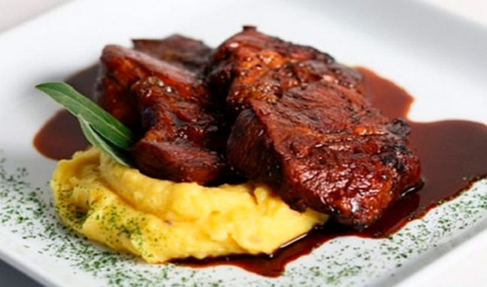
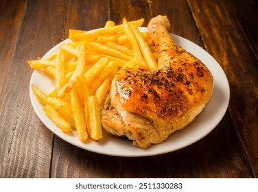

Recetas de pizzas
-
Pizza con Masa al 70% de Hidratación

Una textura suave y aireada, con una corteza ligeramente hinchada
-
Pizza con masa madre
Acidez distintiva y compleja de apariencia rustica, con corteza burbujeante y dorada
-
Pizza con harina integral
Con un perfil saludable, destaca por sus beneficios nutricionales, con una corteza sustanciosa y dorada
Recetas de carnes
-
Bondiola a la cacerola con pure de papas
Una carne jugosa y sabrosa, ideal para una comida reconfortante
-
Asado completo a la parrilla

Un clásico argentino, con cortes jugosos y ahumados, perfecto para compartir
-
Pollo al horno con papas
Una opción saludable y deliciosa, con pollo tierno y papas doradas